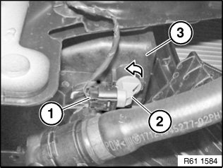

Coolant Level Sensor: Service and Repair
61 31 382 Replacing Coolant Level Switch

WARNING:
Danger of scalding.
Carry out work only after engine has cooled down.

IMPORTANT: Do not damage connected water hoses.

Necessary preliminary tasks:
- If necessary, release screws for coolant expansion tank and raise coolant expansion tank slightly

NOTE: Operation is shown by way of example on the E85. There may be differences in detail in the case of other vehicle models.
Disconnect plug connection (1).
Turn coolant level switch (2) in direction of arrow and feed downwards out of coolant expansion tank (3).